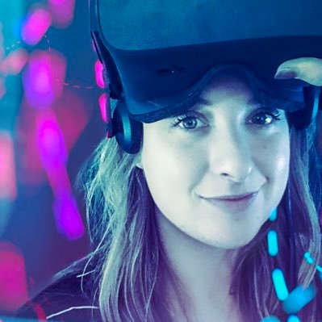
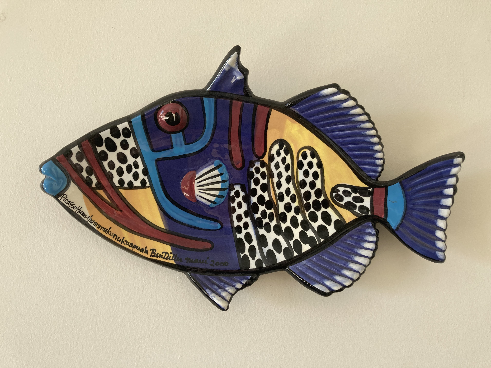
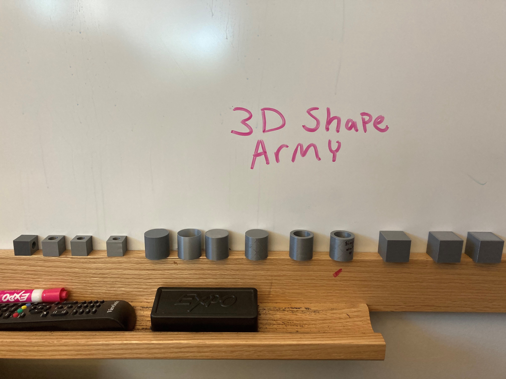
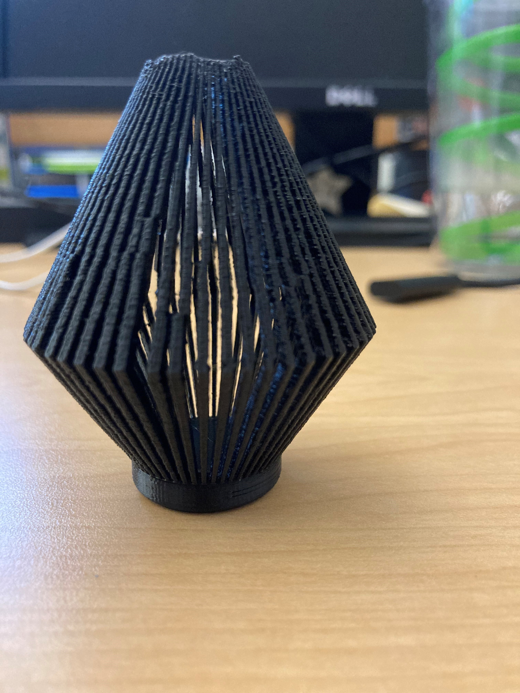

Ms. Pilsner takes on Digital Fabrication!

To my lovely students I am Ms. Pilsner-Technology Teacher. Together we explore, have fun, and sometimes fight (debug) our technology.
While I often focus more on UX for Ed. Tech, in this class I will be much more focused on the goal of learning these tools and skills to be able to design and develop
projects for my middle school students to develop some digital fabrication skills. My school is currently building a Center for Learning and Innovaton that will house our 3d prints, laser cutters and host project-based learning.
I am pretty excited to be a part of the CLI team and to bring some of the skills I learn in this class to the team!
About Me
I am currently a graduate student in the Human Centered Design and Engineering Masters program. I also work full time as a Education Technology Coordinator at St. Thomas School. In this role, I am a technology teacher and support teachers in learning to use technology and how it can support their teaching practice. I have experience teaching in grades 1st-10th and have taught most subjects at the elementary and middle school level. I have worked in two incredibly innovative schools where I have gotten to work on the cutting edge of technology integration and use in schools. This experience and the work I have done with technology teams visiting my classroom is what has inspired to my passion for UX!
I am passionate about educational technology and how technology can be designed better for the user. While working in UX is a new field for me I am loving every minute and continue to seek out every experience I can to prepare. You can find me around Seattle attending technology related Meetups, Hackathons and similar events as well as leading the Seattle Ed Tech Meetup.
Hopes
My hope for this class is to gain confidence in designing item for 3D printing, as well as other means of making. I also hope to gain a level of understanding on how to fix things when they break and the emmerging skills to starting running a middle school makers space. While I am new to this space, a have dabbled in Adobe Illustrator and as an educator always happy to help someone by working together to figure out what the problem is.
My Assignments
Assignment 1: Cookies!

Assignment 2: March of the Shapes!

Assignment 3: Grasshopper!

Assignment 4: Meshey!
